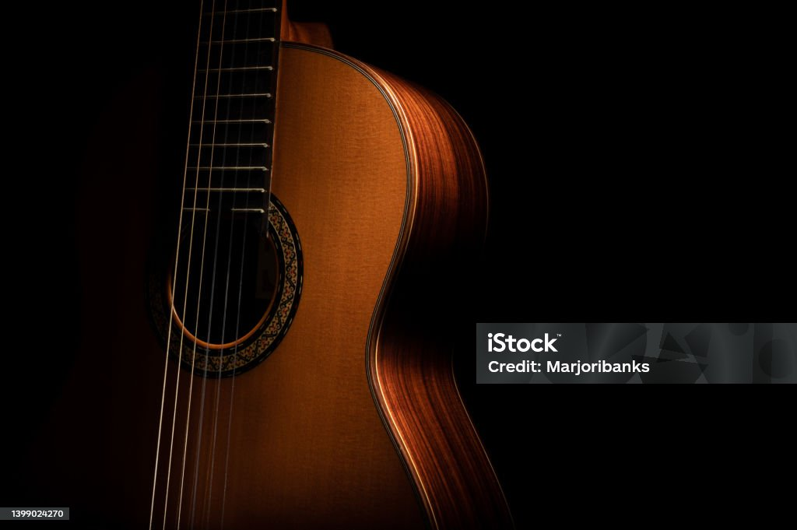

这里收录了几段古典吉他音频。页面视觉尽量保持安静，让注意力停留在曲目、节奏和每一次练习的变化上。

把每一段音频独立成卡片，信息更清楚，试听体验也更集中。
一段偏安静、偏细腻的练习记录，适合从第一首开始进入这页的节奏。
和前一首相邻摆放，方便连续回听，也更容易对比不同片段之间的感觉。
情绪更明显的一段，放在同一页面里，能让整个吉他版块的层次更丰富。
作为收束感较强的一段，适合放在页面尾部，形成更平静的结束。